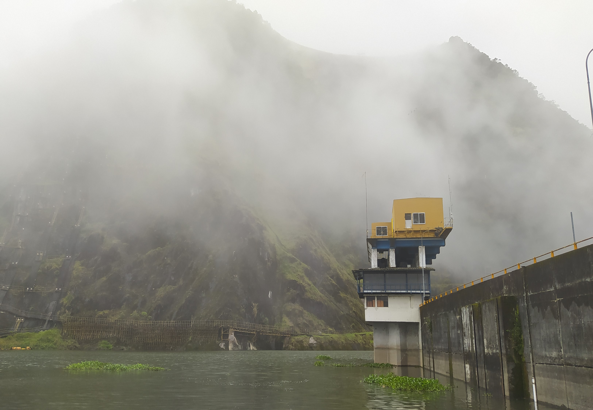
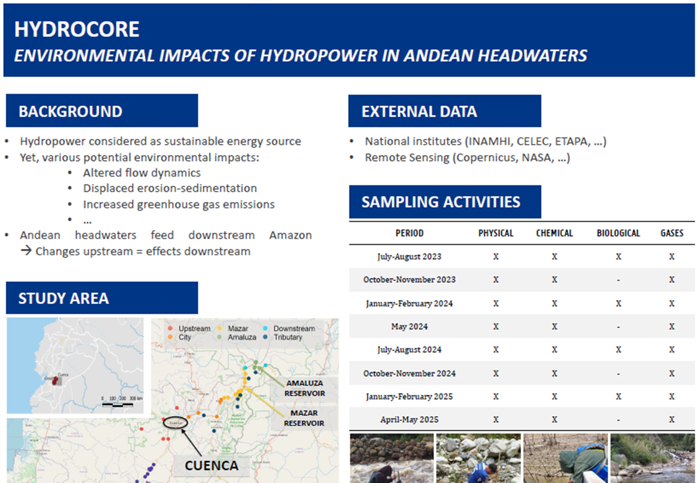

Campaign #7
09/01/2025 - 06/02/2025
 New year and new rains! While we were hit with one of the worst droughts of the past forty years and extensive electricity shortages that affected everyone's life, rainfall has returned since the end of December. River flows have increased tremendously and reservoir levels are rising steadily, providing an end to those damned shortages. Still, reduced water levels in the reservoir and the use of a different boat urged us to identify two new locations within the reservoir. In the end, this appeared to be not as critical as initially expected and a total of 54 sites were sampled (31 stream/river sites and 23 reservoir sites). Despite the sorting experience from previous campaigns, we will still need several weeks to process and identify this (last set of) macroinvertebrate samples. Read more on the seventh field campaign here or in the short report.
Campaign #6
14/10/2024 - 08/11/2024
 It turns out that the rainfall we received at the end of May was able to fill up the reservoirs sufficiently for the subsequent
months, but not to provide enough back-up for electricity production in October. The expected rainfall was not happening and the
whole country was approaching critical conditions. As a result, daily electricity shortages were back and tended to last between 8 to
14 hours! While we were not deeply affected by this when we were in the field, it surely influenced our working schedules in the
laboratory (to analyse the nutrient levels). Water levels in the reservoirs were at an all-time low (causing no outflow of the
tunnel coming from the turbines) and we were working in a flexible manner to proceed. In the end, we collected a total of 51
samples (30 river/stream sites and 21 reservoir sites). Read more on the third field campaign
here or in the short report.
It turns out that the rainfall we received at the end of May was able to fill up the reservoirs sufficiently for the subsequent
months, but not to provide enough back-up for electricity production in October. The expected rainfall was not happening and the
whole country was approaching critical conditions. As a result, daily electricity shortages were back and tended to last between 8 to
14 hours! While we were not deeply affected by this when we were in the field, it surely influenced our working schedules in the
laboratory (to analyse the nutrient levels). Water levels in the reservoirs were at an all-time low (causing no outflow of the
tunnel coming from the turbines) and we were working in a flexible manner to proceed. In the end, we collected a total of 51
samples (30 river/stream sites and 21 reservoir sites). Read more on the third field campaign
here or in the short report.
Campaign #5
22/07/2024 - 22/08/2024
 The HydroCORE has passed its one-year mark, which means that we are halfway of the planned number of sampling campaigns! The
dry season is ongoing and provides slightly lower temperatures during the day and night. This was definitely welcome during our
field days, running up to 22 August 2024. We collected samples in a total of 52 locations (31 river/stream sites and 21 reservoir
sites) and observed that the reservoirs were almost completely full again (though there was no overflow leaving the reservoir).
This is especially good news, as it allows for a comparison with the first campaign in July-August 2023. Similar to the previous
campaigns, the macroinvertebrate samples contain a lot of life and will take time to be processed completely! Read more on the
fifth field campaign here or have a look at the more extensive
short report.
The HydroCORE has passed its one-year mark, which means that we are halfway of the planned number of sampling campaigns! The
dry season is ongoing and provides slightly lower temperatures during the day and night. This was definitely welcome during our
field days, running up to 22 August 2024. We collected samples in a total of 52 locations (31 river/stream sites and 21 reservoir
sites) and observed that the reservoirs were almost completely full again (though there was no overflow leaving the reservoir).
This is especially good news, as it allows for a comparison with the first campaign in July-August 2023. Similar to the previous
campaigns, the macroinvertebrate samples contain a lot of life and will take time to be processed completely! Read more on the
fifth field campaign here or have a look at the more extensive
short report.
Workshop in Quito
08/07/2024 - 09/07/2024
 For various years, the VLIR-Network project brought several Flemish and Ecuadorean universities closer together, supporting scientific collaboration and the creation of new master programmes. The official closure of the project had been postponed (originally planned in February 2024, right after the crisis situation in Ecuador in January 2024) and was finally held in Quito at the beginning of July. In combination with the closure of the VLIR project, a one-day seminar was organised on the management (and associated challenges) of freshwater resources in Ecuador along with perspectives for 2030. Due to our previous projects within the region, a presentation was given on the illustration of anthropogenic impacts on freshwater resources through four case studies. In addition, a poster reporting on the first results of the HydroCORE project was developed and presented.
{kind=link}
Campaign #4
06/05/2024 - 29/05/2024
 The electricity shortages are back! They are mainly caused by limited rainfall during the normally wet season (January-May). The
situation is even more problematic than what we experienced in the October-November 2023 (including the second field campaign),
with electricity shortages up to 8 hours per day. Under these circumstances, we performed our fourth field campaign and collected
a total of 53 samples (32 river/stream sites and 21 reservoir sites). This time, we were able to include some extra locations in
the Amaluza reservoir, as we made use of a smaller boat that was able to get in and through the extensive cover of water hyacinths
(which was not possible with the big boat used during the first two campaigns). Again, no biological samples were collected and we
were able to continue focussing on the hydrological topic as well as the formulation of a manuscript and the preparation of a
presentation and poster for a workshop in July! Read more on the fourth field campaign here
or go to the short report.
The electricity shortages are back! They are mainly caused by limited rainfall during the normally wet season (January-May). The
situation is even more problematic than what we experienced in the October-November 2023 (including the second field campaign),
with electricity shortages up to 8 hours per day. Under these circumstances, we performed our fourth field campaign and collected
a total of 53 samples (32 river/stream sites and 21 reservoir sites). This time, we were able to include some extra locations in
the Amaluza reservoir, as we made use of a smaller boat that was able to get in and through the extensive cover of water hyacinths
(which was not possible with the big boat used during the first two campaigns). Again, no biological samples were collected and we
were able to continue focussing on the hydrological topic as well as the formulation of a manuscript and the preparation of a
presentation and poster for a workshop in July! Read more on the fourth field campaign here
or go to the short report.
Campaign #3
30/01/2024 - 29/02/2024
 After a relaxing holidays to start the new year, we headed out to the field for our third sampling campaign and successfully
wrapped it up on leap day (29 February 2024). We had some momentary logistics issues, as CELEC (who manages the reservoirs)
was not able to provide us with boat transport to sample within the reservoirs. This caused a minor delay of one week, though
ultimately we were able to perform our sampling by means of hiring a boat through a tourism-oriented company. Flow and water
levels had already recovered a bit in comparison to the previous campaign, yet rainfall events were less intense than under
normal conditions (causing field days to be quite hot!). While the fieldwork has ended (with a total of 52 sites: 31 river/stream
sites and 21 reservoir sites), we will need various weeks to continue processing the macroinvertebrate samples. Again, the
diversity within those samples (especially in the upstream region of Yunguilla) is surprising. Read more on the third field
campaign here or in the
short report.
After a relaxing holidays to start the new year, we headed out to the field for our third sampling campaign and successfully
wrapped it up on leap day (29 February 2024). We had some momentary logistics issues, as CELEC (who manages the reservoirs)
was not able to provide us with boat transport to sample within the reservoirs. This caused a minor delay of one week, though
ultimately we were able to perform our sampling by means of hiring a boat through a tourism-oriented company. Flow and water
levels had already recovered a bit in comparison to the previous campaign, yet rainfall events were less intense than under
normal conditions (causing field days to be quite hot!). While the fieldwork has ended (with a total of 52 sites: 31 river/stream
sites and 21 reservoir sites), we will need various weeks to continue processing the macroinvertebrate samples. Again, the
diversity within those samples (especially in the upstream region of Yunguilla) is surprising. Read more on the third field
campaign here or in the
short report.
Campaign #2
18/10/2023 - 10/11/2023
 The second campaign ended successfully on 10 November 2023! The experiences of the first campaign came in handy to
access the selected sampling sites and organise the logistics of the field visits in an efficient manner. Surprisingly,
the study area (and Ecuador in general) is facing the worst drought of the last four decades, causing the levels of
the reservoirs to be exceptionally low. Also water levels and flow velocities within the rivers are lower than observed
during the first campaign. In the end, we were able to collect samples from 52 sites: 32 river/stream sites and 21
reservoir sites. As no biological samples were collected this time, we can start focussing more on the hydrological
topic of the HydroCORE project. Read more on the second field campaign here
or go to the short report.
The second campaign ended successfully on 10 November 2023! The experiences of the first campaign came in handy to
access the selected sampling sites and organise the logistics of the field visits in an efficient manner. Surprisingly,
the study area (and Ecuador in general) is facing the worst drought of the last four decades, causing the levels of
the reservoirs to be exceptionally low. Also water levels and flow velocities within the rivers are lower than observed
during the first campaign. In the end, we were able to collect samples from 52 sites: 32 river/stream sites and 21
reservoir sites. As no biological samples were collected this time, we can start focussing more on the hydrological
topic of the HydroCORE project. Read more on the second field campaign here
or go to the short report.
Campaign #1
11/07/2023 - 10/08/2023
 The first campaign is a fact! We have been out and about to collect the desired data from a selection of sites.
Unfortunately, there is a clear difference between accessibility based on a map and the actual situation. Several
times we were faced with the necessity to cancel a location and look for an alternative. Luckily, in the end we
were able to find 49 accessible sites: 30 river/stream sites and 19 reservoir sites. The fieldwork is over, but
we'll definitely need more time to bring all the data together and to process all the macroinvertebrate samples.
This means a lot of sample cleaning and picking out all macroinvertebrates that we can find. One observation so
far: there is more life in the selected sites than expected! Read more on this first field campaign of our project
here or in the
short report.
The first campaign is a fact! We have been out and about to collect the desired data from a selection of sites.
Unfortunately, there is a clear difference between accessibility based on a map and the actual situation. Several
times we were faced with the necessity to cancel a location and look for an alternative. Luckily, in the end we
were able to find 49 accessible sites: 30 river/stream sites and 19 reservoir sites. The fieldwork is over, but
we'll definitely need more time to bring all the data together and to process all the macroinvertebrate samples.
This means a lot of sample cleaning and picking out all macroinvertebrates that we can find. One observation so
far: there is more life in the selected sites than expected! Read more on this first field campaign of our project
here or in the
short report.
Start of the HydroCORE project
01 July 2023
 The project has officially started and will take place in Cuenca (Ecuador) for the following two years (up to 30 June 2025).
Ecuador is currently affected by political instability and increased drug-related criminality, though Cuenca seems to remain
less affected. There will not be much time to lose, because the first sampling campaign will already start on 11 July!
Simultaneously, two other projects of the research group Aquatic Ecology of Ghent University are taking place:
one related to greenhouse gas emissions and the effect of urbanization and one related to greenhouse gas emissions of the
lakes and ponds in the Cajas national park. During these campaigns, experiences will be shared as well as workforce.
The project has officially started and will take place in Cuenca (Ecuador) for the following two years (up to 30 June 2025).
Ecuador is currently affected by political instability and increased drug-related criminality, though Cuenca seems to remain
less affected. There will not be much time to lose, because the first sampling campaign will already start on 11 July!
Simultaneously, two other projects of the research group Aquatic Ecology of Ghent University are taking place:
one related to greenhouse gas emissions and the effect of urbanization and one related to greenhouse gas emissions of the
lakes and ponds in the Cajas national park. During these campaigns, experiences will be shared as well as workforce.